class: center, middle # Random tips for aspiring scientific open sourcers ## Loaded with anecdotes from GPyOpt and Emukit Andrei Paleyes GP Cambridge Meetup 21.01.2021 ??? Thanks and glad to be giving a talk here. This will be relatively light talk about open source and some of how it works. I am a software engineer, therefore no math on slides! --- # Why is open source important? Open source is big. And getting bigger! 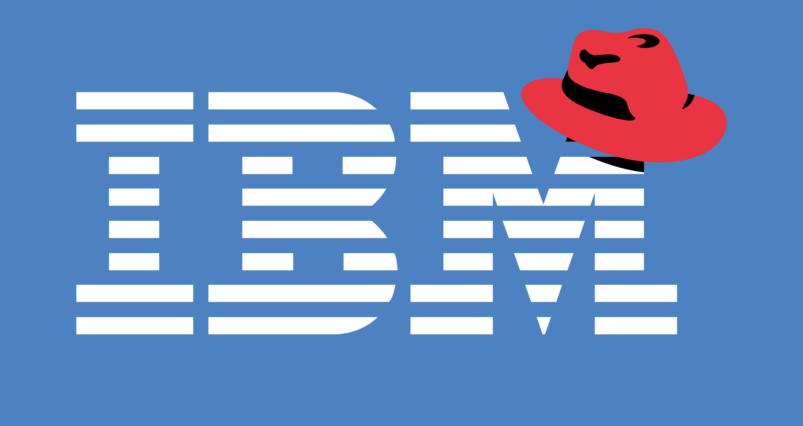 ??? In 2018, for 34 billion dollars. That's bigger than Facebook/Whatsapp or MS/Skype or Oracle/Sun or Google/Motorola hope at least some of this resonated with some of you --- # Well... but why is that important .bold[for me]? * Researcher: release your research * Student: great to improve your skills, even start a career * Industry practitioner: understand tools you use * None of the above: do you like cool communities? ??? Researches might want to release their cutting edge research Students - this is not taught in the unis. And you can start your career by taking part in open source! Industry practitioner - in your daily work you are likely using ton of open source tools. Would it be nice to know how to engage with them more? --- # About me * PhD student at the University of Cambridge * Software engineer * Joined GPyOpt in 2017 * Authored Emukit in 2018 ??? PhD student, before that software engineer in Amazon. Ask me about a career switch! As a software engineer, includes 6 years in Amazon, 3 of which spent working with ML deployment --- # Two packages .center[ 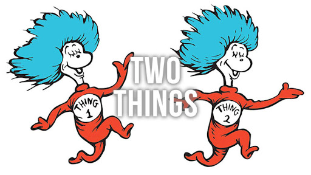 ] --- # GPyOpt https://github.com/SheffieldML/GPyOpt * Released in 2014 * Bayesian optimization in Python using GPy * Predecessor (with GPy) of many similar packages * Big community, 700 stars on GitHub ??? GPy and GPyOpt are very successful, so much so that they gave birth to a plethora of similar packages based in TF and PyTorch. I didn't develop it, this credit goes to other people, some of whom you just saw. But i joined in 2017 and gradually became the main person behind it. --- # Emukit https://emukit.github.io * Released in 2018 * From people that brought you GPyOpt! * Bayesian decision making under uncertainty using mostly GPs * Optimization, quadrature, experimental design, sensitivity analysis, multi-fidelity ??? Emukit appeared as a result of trying to push gpyopt to do new tasks. more on that later! --- class: middle # Tip 1: Running open source projects is good --- # Tip 1: Running open source projects is good * ... blah ... * ... tech expertise ... * ... looks good on your CV ... * ... blah ... --- # Tip 1: Running open source projects is good ### Network "I could have written many papers and gotten lots of citations. Instead I chose to write GPyOpt, because it was the right thing to do. And now everyone knows me as an author of GPyOpt. Would writing papers take me as far? Probably not." .right[Javier Gonzalez] <br /> <br /> <br /> "It won't count towards anything formal, but everyone will like you." .right[Maren Mahsereci] ??? Network, i feel, is particularly important for scientific communities. Especially in GPs, which tend to be relatively small, compared to super-deep-learning Here are some thoughts from people who know these communities much better than i do. discuss thoughts --- # Shoutout to contributors! .cols[ .fifty[ * Javier Gonzalez * Neil Lawrence * Mark Pullin * Maren Mahsereci * Aaron Klein * Eric Kalosa-Kenyon * Alexandra Gessner * Zhenwen Dai * Andreas Damianou * Henry Moss * David-Elias Künstle ] .fifty[ * Eero Siivola * Kurt Cutajar * Cliff McCollum * Masha Naslidnyk * Rodolphe Jenatton * Fela Winkelmolen * Alan Saul * Jordan Massiah * Aki Vehtari * Frank Hutter * Nicolas Knudde ] ] And many more GitHub contributors! ??? All the people I was fortunate enough to interact with while working on GPyOpt and Emukit. Not random folks, but actual people who share the same interests and are part of the same community. Good network opens lots of doors, both in business and in academia --- class: middle # Tip 2: Have clear scope ??? So let's think you are convinced enough. How to start? Lot's of good advice, but the one I found most crucial is this. it can answer oh so many questions --- # Tip 2: Have clear scope Emukit design, iteration 1 * Decision loop * Acquisition * Model * Likelihood * Kernel * ... Horrible thing to develop and use. --- # Tip 2: Have clear scope Emukit design, iteration 2 .center[ 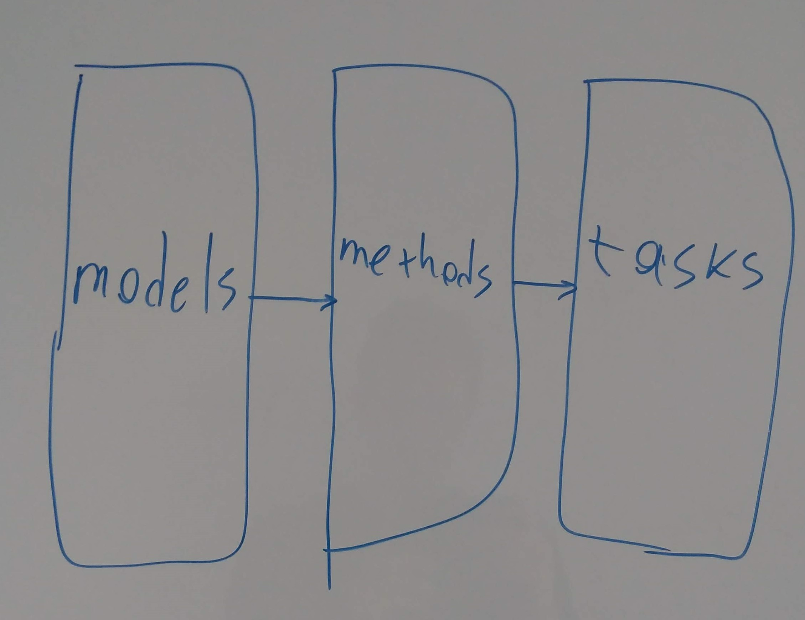 ] ??? a meeting when someone wrote this on the board. i didn't actually keep the photo of random drawing on the board for 3 years, i just quickly made the same at home and shot that --- # Tip 2: Have clear scope Emukit design, iteration 2, continued .center[ 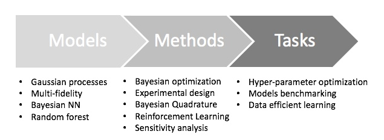 ] ??? build a model, apply a scientific method, solve yor business task once we concentrated on the middle bit, everuthing else fell into place. no need to think about what those models are, just interface them as a whole --- class: middle # Tip 3: Embrace learning opportunities ??? Besides obvious stuff like how to use git branches or how to generate documentation Packages --- # Tip 3: Embrace learning opportunities BQ model definition .center[ 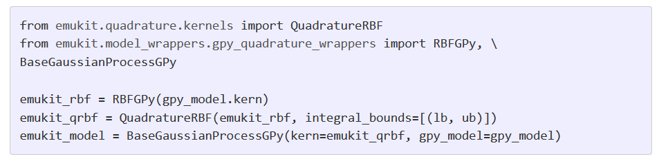 ] ??? BQ needs a bit more control over model, so the not-so-fun stuff i just talked about few slides ago is needed here. Why is that? Maren, our expert in BQ, spent so many hours educating me on what BQ does and why we need certain features. I could be bored and bothered, but instead I embraced it and learned a ton. --- # Tip 3: Embrace learning opportunities Unit tests .center[ 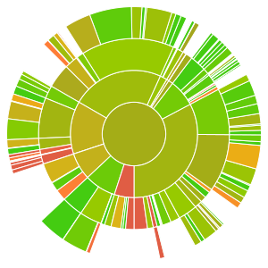 ] ??? I was blessed with great collaborators, who shared the same attitude about learning new stuff. So whenever I said "this PR cannot be merged, it doesn't have good test coverage", they didn't get annoyed, they got excited! As a result, we have 89% coverage in Emukit, pretty good for a scientific package. You are looking at the visualization of that. --- class: middle # Tip 4: Quality pays off --- # Tip 4: Quality pays off What does quality mean? * Repo organization * Tutorials * Docs * Tests * Continuous integration --- # Tip 4: Quality pays off How does it pay off? * ... blah ... * ... attracts users ... * ... looks professional ... * ... blah ... --- # Tip 4: Quality pays off ### It saves your time 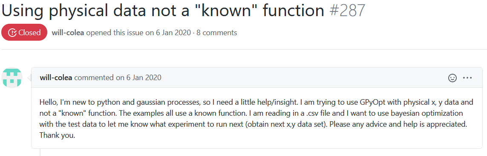 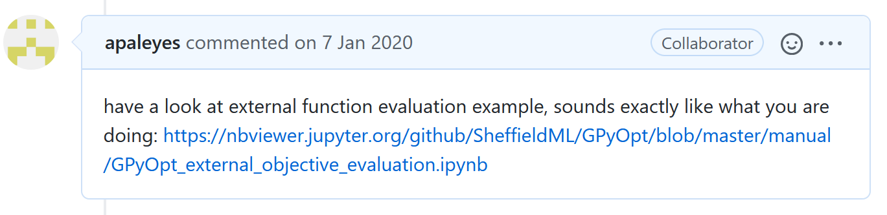 ??? I have answered this question countless times. Very convenient to just send people to the right doc! --- ### It saves your time 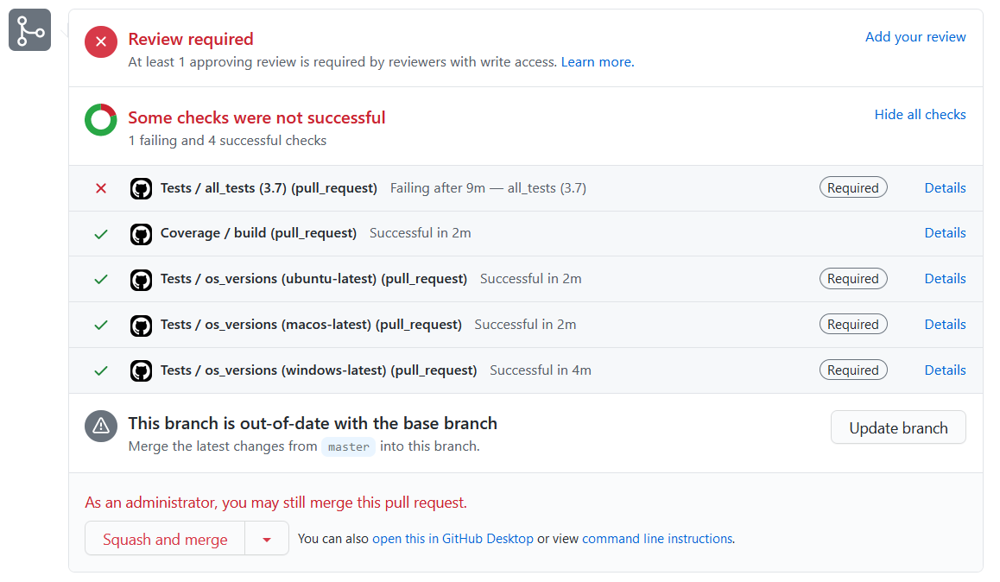 ??? There is just one failed test somewhere. How could I catch that if tests weren't present? --- class: middle # Tip 5: Deal with trade-offs --- # Tip 5: Deal with trade-offs ### More options vs Ease of use ``` class GPyOpt.methods.bayesian_optimization.BayesianOptimization(f, domain=None, constraints=None, cost_withGradients=None, model_type='GP', X=None, Y=None, initial_design_numdata=5, initial_design_type='random', acquisition_type='EI', normalize_Y=True, exact_feval=False, acquisition_optimizer_type='lbfgs', model_update_interval=1, evaluator_type='sequential', batch_size=1, num_cores=1, verbosity=False, verbosity_model=False, maximize=False, de_duplication=False, **kwargs) ``` ??? That's the main GPyOpt class. What a very powerful API. It gives you so many options to play with. So flexible! It is also very complex. Some options depend on others, hard to see if changing anything will have any effect at all. --- # Tip 5: Deal with trade-offs ### Broader scope vs Narrow focus 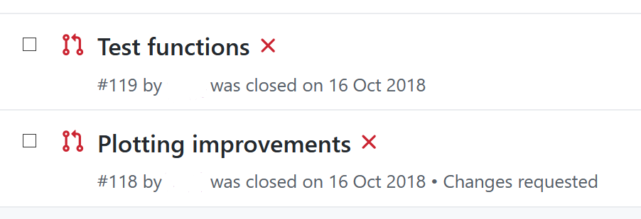 ??? Here is an example of PRs from same author that never got merged. Apologies to the author if they are in the audience today. These ones very quite significantly expanding the scope of plotting, which i never felt was right for the library. We never merged them. --- # Tip 5: Deal with trade-offs ### Refactoring Example 1: Variables .cols[ .fifty.red[ ``` if d['type'] == 'discrete': new_values = d['domain'] elif d['type'] == 'categorical': new_values = np.eye(len(d['domain'])) elif d['type'] == 'context': new_values = d['value'] elif d['type'] == 'bandit': new_values = d['domain'] ``` ] .fifty.green[ ``` new_values = variable.get_possible_values() ``` ] ] ??? Refactoring is always an investment of time and effort without clear returns as far as new funcitons go. So it's always a trade off if you want to spend time doing it or not. Here is an example where it was worth, variables representation in gpyopt --- # Tip 5: Deal with trade-offs ### Refactoring Example 2: Multi-output GPs support .cols[ .fifty.red[ ``` self.x_opt = self.X[np.argmin(self.Y),:] self.Y_best = best_value(self.Y) self.fx_opt = np.min(self.Y) ``` ] .fifty.green.center[ ??? ] ] ??? And here is an exmaple where it wasn't. To introduce multi-output we had to rewrite lots of core code, and we decided to build emukit instead. Starting new packge isn't always the right solution though. --- # Tip 5: Deal with trade-offs ### New features and PRs 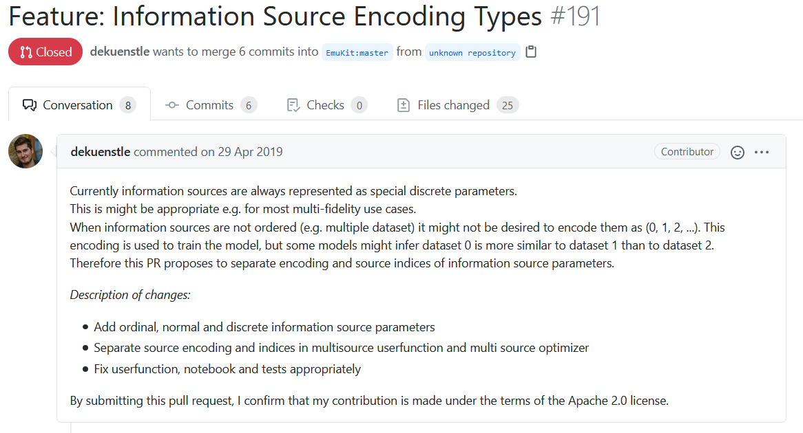 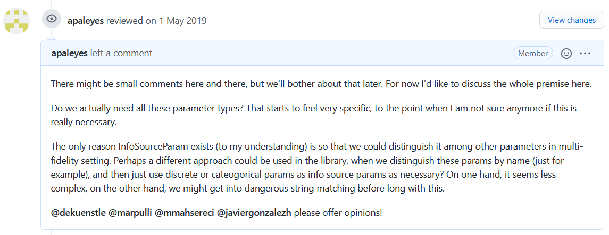 ??? People volounteer their time to build something in your package. Exciting, right? All the harder to say "no". Being an owner of an active open source pakcage, your eloquency will grow a ton! Saying "no" in a right and constructive way is a skill that's worth mastering. Can't claim I mastered it myself, but I certainly had plenty of chances to practice. --- class: middle # Tip 6: Expect hard decisions ??? Talking of hard decisions. Running your own publicly facing thing, be it theater show, business or open source package, requires some hard decisions. And here i'd like to talk about one I have taken last year, and that's probably the hardest i had to make yet in my open source journey. We never announced it anywhere yet, so this meetup seems fitting enough. --- # Tip 6: Expect hard decisions > Dear GPyOpt community! > We would like to acknowledge the obvious. The core team of GPyOpt has moved on, and over the past months we weren't giving the package nearly as much attention as it deserves. Instead of dragging our feet and giving people only occasional replies and no new features, we feel the time has come to officially declare the end of GPyOpt maintenance. > ... > Sincerely yours, Andrei Paleyes and Javier Gonzalez ??? We are effectively closing GPyOpt, because both of us moved on to different things. It is still avaialble, but frozen. And if i have inspired anyone here enough, feel free to reach out, perhaps you will be the next person to run GPyOpt and take it to the new heights. And maybe one day you, just as Red Hat, will be contacted by the Fortune-500 company! --- # Thanks! * Tip 1: Running open source projects is good * Tip 2: Have clear scope * Tip 3: Embrace learning opportunities * Tip 4: Quality pays off * Tip 5: Deal with trade-offs * Tip 6: Expect hard decisions <br /> <br /> .bold[Check it out!] https://github.com/SheffieldML/GPyOpt https://emukit.github.io <br /> <br /> .bold[Get in touch!] ap2169@cam.ac.uk | https://paleyes.info